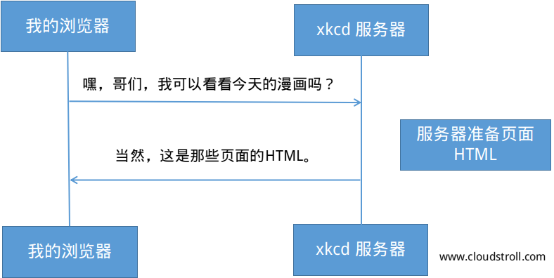

一旦服务器收到客户端的请求，它可以通过URI确切的知道客户端需要的资源，和通过HTTP请求方式知道客户端要用这些资源做什么。例如，在一个GET的请求下，服务器准备好所需的资源，并在HTTP相应中返回它。如：从xkcd服务器返回的响应：

翻译成为HTTP，被发回浏览器的响应看起来是如下的样子：
HTTP响应包含请求的资源（在本示例中是HTML内容），和其他的关于响应的信息。响应的第一行尤其重要，包含了HTTP响应状态码（本例中的200）。状态码将总体的通信结果返回给客户端。请求是否成功？是否出现错误？不同的状态码的存在显示不同的页面状态，比如成功，发生错误或者需要客户端做什么事情（如跳转到其他的页面）。所有的状态码可以在维基百科上面查到，《状态码列表》。
就像请求，一个HTTP响应也包含响应头信息。例如，一个重要的HTTP响应头信息是Content-Type。响应的信息主体可以以不同的格式返回如HTML，XML，JSON等，Content-Type头信息用互联网媒体类型（Internet Media Types）如text/html告诉客户端返回的响应是什么样的格式。所有的媒体格式都可以在维基百科上面查到，《公共媒体类型》。
其他的头部信息同样也非常重要。例如，特定的头部信息可以用来构建一个强有力的缓存系统。